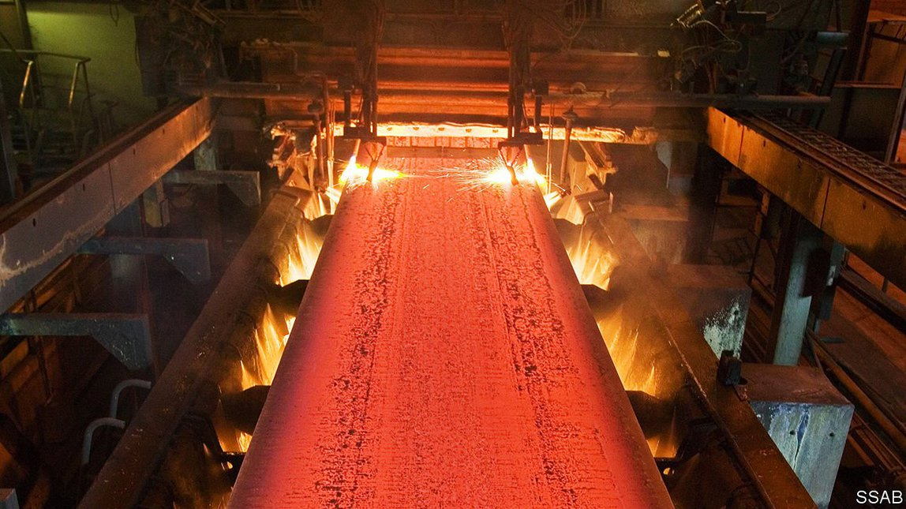

2021-05-31T13:06:25+00:00
绿色钢铁
丰富的可再生能源正在开辟工业新前沿
竞争对手惶惶不安
瑞典在传统上划分为三个地区，诺尔兰是其中最大的一个。它横跨瑞典版图的上半部，人口稀少，越往北越是如此。长期以来，当地为数不多的居民要靠采矿业、军队和林业提供工作机会。瑞典的大部分工业都远在南方。但诺尔兰有充沛的水电资源。这种电力价格低廉，而且更重要的是环保，加上这里地价便宜，靠近铁矿，这一切正在引发一场超乎想象的工业革命，它基于氢能、“绿色”钢铁和电池。
钢铁制造商SSAB已准备好要交付第一批“生态钢材”，产自它在北部城市吕勒奥（Lulea）的一家氢燃料试点工厂。如今已是工业车辆厂商的沃尔沃将使用这些钢材来制造卡车。一般重六七吨的沃尔沃卡车会用到五吨钢。每用化石燃料生产一吨钢材，就有约两吨令地球升温的二氧化碳排放到大气中。
要制造钢铁，必须在高温下熔化铁矿石，从氧化铁中还原出铁。这个过程通常要燃烧化石燃料，释放大量二氧化碳。如果改用氢气作为还原剂，可以把通常情况下的二氧化碳排放减少98%以上。所用的氢气是用水电电解水生产的。这种方法几乎完全不排放二氧化碳。
另一家卡车公司斯堪尼亚（Scania）也希望利用诺尔兰的廉价水电。该公司计划到2025年每年生产15000辆电动卡车，约占其年产量的15%。为此，它投资了使用诺尔兰水电的电池制造新企业Northvolt。Northvolt的主要工厂位于吕勒奥西南向130公里的谢莱夫特奥（Skelleftea），并正在那里建造一家电池回收厂。该公司希望其电池产能到2021年底可达到16吉瓦时。Northvolt的董事长卡尔-埃里克·拉格克兰茨（Carl-Erik Lagercrantz）希望最终把产能提升至每年150吉瓦时。到2030年，欧盟对电动汽车电池的年需求预计将达到约450吉瓦时，如果拉格克兰茨能在那时实现目标，将会在其中占有相当的份额。
拉格克兰茨还有意涉足绿色钢材业务。受到SSAB公司试点项目的启发，他也决定一试氢能炼钢，成立了H2 Green Steel公司。生产基地将设在吕勒奥西北向30公里的古老军事小镇布登。到2030年，新工厂将年产500万吨扁钢，在目前欧盟每年9000万吨的扁钢消耗量中占比虽小，但意义重大。
瑞典北部地区的炼钢业取得飞跃发展，欧洲各地纷纷效仿，以应对类似的环境保护压力——假如德国绿党赢得9月的大选上台执政（看起来非常有可能），这种压力只会有增无减。欧洲钢铁产量仍占世界总量的16%，比例不小。德国和波兰的大型钢铁生产商紧张不安，因为他们主要以煤为燃料，污染严重。就连瑞典的邻国挪威也面临败下阵来的风险。挪威也拥有丰富的可再生能源，但在这方面投资不足，所生产的绿色电力很快将难以满足民用和工业需求。
同时，所有这些绿色能源投资都对瑞典北部的其他经济部门产生了连锁推动效应。布登的市长克莱斯·诺德马克（Claes Nordmark）表示，H2 Green Steel公司将在当地建造新厂房的消息传出后，房价上涨，承包商正在竞相建造公寓楼。其他公司也展开竞逐，争取成为这家钢铁公司的供应商或能利用其产品。预计当地人口将激增，诺德马克和他当地的同事正忙于筹建学校和体育设施。笔者鼓励诺德马克放下瑞典人的内敛，来点豪言壮语。他笑逐颜开地说：“南方人以为我们这里一无所有。但现在我们可以提供人们梦寐以求的‘绿色’职位和超赞的生活方式啦。”
2021-05-31T13:06:25+00:00
Green steel
Plentiful renewable energy is opening up a new industrial frontier
Competitors are alarmed
NORRLAND IS THE largest of Sweden’s three historical “lands”. It spans the top half of the country and is sparsely populated, the more so the farther north you go. The few people who live there have long relied for work on mining, the army and forestry. Most of Sweden’s industry is far to the south. But Norrland abounds in hydropower. Power that is cheap and—crucially—green, along with bargain land and proximity to iron ore, is sparking an improbable industrial revolution, based on hydrogen, “green” steel and batteries.
SSAB, a steelmaker, is poised to deliver its first consignment of “eco-steel” from a hydrogen-fuelled pilot plant in Lulea, a northern city. Volvo, an industrial-vehicle firm these days, will use the steel to build lorries. Of the six or seven tonnes that its typical lorry weighs, around five consist of steel. And for each tonne of steel produced using fossil fuels, around two tonnes of planet-cooking carbon dioxide get belched into the atmosphere.
To make steel, iron ore must be melted at high temperatures and reduced from iron oxide to iron, a process that typically involves burning fossil fuels, releasing huge amounts of carbon dioxide. Replacing them with hydrogen as a reducing agent eliminates more than 98% of the carbon dioxide normally released. The hydrogen is made by electrolysing water, using electricity produced by hydro-power. This approach involves almost no carbon-dioxide emissions at all.
Scania, another automotive firm, is also hoping to exploit Norrland’s cheap hydro-power. It plans to make 15,000 battery-powered trucks a year by 2025, around 15% of its annual production. To that end it has invested in Northvolt, a new battery-making enterprise powered by Norrland’s hydro-electricity. Northvolt’s main facility is in Skelleftea, 130km south-west of Lulea. It is also building a battery-recycling plant there. By the end of 2021 the company hopes to have churned out enough batteries to store 16 gigawatt-hours. Carl-Erik Lagercrantz, Northvolt’s chairman, wants to scale that up eventually to 150 gigawatt-hours a year. If he does so by 2030, he will be supplying a sizeable amount of the European Union’s expected annual demand of some 450 gigawatt-hours of electric-vehicle battery capacity by 2030.
Mr Lagercrantz also wants to get into the green-steel business. Taking inspiration from SSAB’s pilot project, he decided to have a go at hydrogen-based steelmaking too, and founded H2 Green Steel. Production will be based in Boden, an old army town 30km north-west of Lulea. The new plant will make 5m tonnes of flat steel a year by 2030, a small but meaningful percentage of the 90m tonnes that is currently consumed annually in the EU.
Northern Sweden’s steelmaking leaps are being emulated elsewhere in Europe, in response to similar environmental pressures which will only increase if, as looks very likely, Germany’s Greens enter government after the election in September. Europe produces a still significant 16% of the world’s steel. Big producers in Germany and Poland, where the industry is mostly coal-based and very dirty, are nervy. Even neighbouring Norway is in danger of losing out. It too has the gift of rich renewable-energy resources, but underinvestment means there may soon not be enough of this green electricity to meet the demands of both households and industry.
Meanwhile, all the green-tinged investments have knock-on effects for the rest of the economy of northern Sweden. Claes Nordmark, the mayor of Boden, says house prices are rising and contractors are queuing up to build apartment blocks in anticipation of H2 Green Steel’s new facility. Other companies are vying to supply the steelmaker, or to take advantage of its products. Expecting a jump in population, Mr Nordmark and his colleagues in the region are building schools and sporting facilities. Your correspondent encouraged him to abandon Swedish reticence and brag. “Those in the south think there is nothing here. But now we can offer the green jobs that people dream of—and an amazing lifestyle,” he beams. ■
2021-05-31T13:06:25+00:00
綠色鋼鐵
豐富的可再生能源正在開闢工業新前沿
競爭對手惶惶不安
瑞典在傳統上劃分為三個地區，諾爾蘭是其中最大的一個。它橫跨瑞典版圖的上半部，人口稀少，越往北越是如此。長期以來，當地為數不多的居民要靠採礦業、軍隊和林業提供工作機會。瑞典的大部分工業都遠在南方。但諾爾蘭有充沛的水電資源。這種電力價格低廉，而且更重要的是環保，加上這裡地價便宜，靠近鐵礦，這一切正在引發一場超乎想象的工業革命，它基於氫能、“綠色”鋼鐵和電池。
鋼鐵製造商SSAB已準備好要交付第一批“生態鋼材”，產自它在北部城市呂勒奧（Lulea）的一家氫燃料試點工廠。如今已是工業車輛廠商的沃爾沃將使用這些鋼材來製造卡車。一般重六七噸的沃爾沃卡車會用到五噸鋼。每用化石燃料生產一噸鋼材，就有約兩噸令地球升溫的二氧化碳排放到大氣中。
要製造鋼鐵，必須在高溫下熔化鐵礦石，從氧化鐵中還原出鐵。這個過程通常要燃燒化石燃料，釋放大量二氧化碳。如果改用氫氣作為還原劑，可以把通常情況下的二氧化碳排放減少98%以上。所用的氫氣是用水電電解水生產的。這種方法幾乎完全不排放二氧化碳。
另一家卡車公司斯堪尼亞（Scania）也希望利用諾爾蘭的廉價水電。該公司計劃到2025年每年生產15000輛電動卡車，約佔其年產量的15%。為此，它投資了使用諾爾蘭水電的電池製造新企業Northvolt。Northvolt的主要工廠位於呂勒奧西南向130公里的謝萊夫特奧（Skelleftea），並正在那裡建造一家電池回收廠。該公司希望其電池產能到2021年底可達到16吉瓦時。Northvolt的董事長卡爾-埃里克·拉格克蘭茨（Carl-Erik Lagercrantz）希望最終把產能提升至每年150吉瓦時。到2030年，歐盟對電動汽車電池的年需求預計將達到約450吉瓦時，如果拉格克蘭茨能在那時實現目標，將會在其中佔有相當的份額。
拉格克蘭茨還有意涉足綠色鋼材業務。受到SSAB公司試點項目的啟發，他也決定一試氫能鍊鋼，成立了H2 Green Steel公司。生產基地將設在呂勒奧西北向30公里的古老軍事小鎮布登。到2030年，新工廠將年產500萬噸扁鋼，在目前歐盟每年9000萬噸的扁鋼消耗量中佔比雖小，但意義重大。
瑞典北部地區的鍊鋼業取得飛躍發展，歐洲各地紛紛效仿，以應對類似的環境保護壓力——假如德國綠黨贏得9月的大選上台執政（看起來非常有可能），這種壓力只會有增無減。歐洲鋼鐵產量仍佔世界總量的16%，比例不小。德國和波蘭的大型鋼鐵生產商緊張不安，因為他們主要以煤為燃料，污染嚴重。就連瑞典的鄰國挪威也面臨敗下陣來的風險。挪威也擁有豐富的可再生能源，但在這方面投資不足，所生產的綠色電力很快將難以滿足民用和工業需求。
同時，所有這些綠色能源投資都對瑞典北部的其他經濟部門產生了連鎖推動效應。布登的市長克萊斯·諾德馬克（Claes Nordmark）表示，H2 Green Steel公司將在當地建造新廠房的消息傳出後，房價上漲，承包商正在競相建造公寓樓。其他公司也展開競逐，爭取成為這家鋼鐵公司的供應商或能利用其產品。預計當地人口將激增，諾德馬克和他當地的同事正忙於籌建學校和體育設施。筆者鼓勵諾德馬克放下瑞典人的內斂，來點豪言壯語。他笑逐顏開地說：“南方人以為我們這裡一無所有。但現在我們可以提供人們夢寐以求的‘綠色’職位和超贊的生活方式啦。”